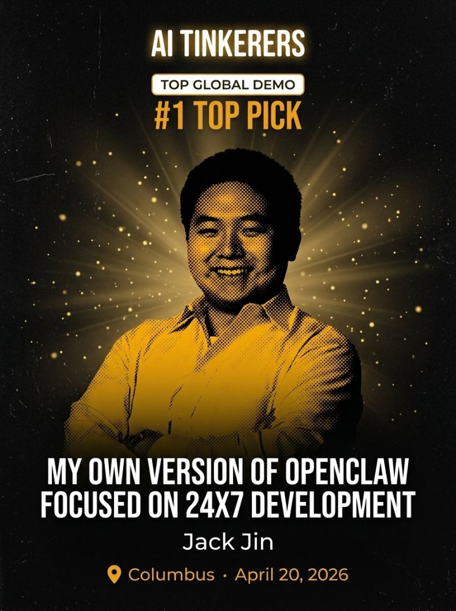
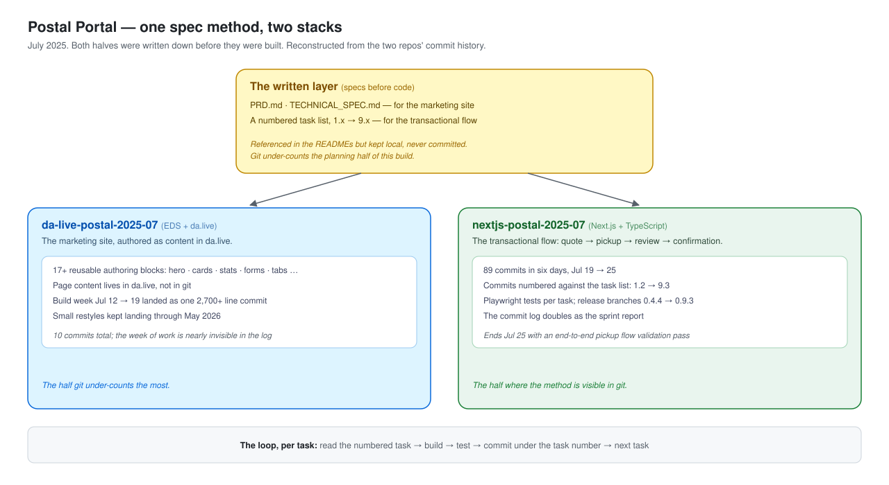

One engine, one private brain per instance
The split is the design: all logic in a public engine that never names anyone. All identity in a private instance repo the engine animates.

Associate Director, Accenture · Columbus, Ohio
A dated log of side projects. Each one has a repo, a first commit, and a last commit. Sorted by most recently touched, newest first.
Apr 2025 → now · the main run · one 2024 prologue below
Bars run first commit → last build commit, so overlaps are visible. A few repos kept getting small restyles after their bar ends. Click one to jump to the writeup.
How they were built · each writeup below carries one of these labels
Jul 2026 — present · 2 repos
ad hoc no spec preceded the code. The discipline came from releases: 26 tags in 19 days, a changelog per release line, learnings written down as they happened.
The experiment: how much of an organization's back office can a mesh of agents run on its own? Compliance calendar, bookkeeping, document library, board hygiene, research watch, inbound triage. The point is to push that boundary until one human job is left standing: the approval gate.
The engine is public and knows no names. The knowledge lives in a second, private brain repo: ledger, records, CRM, all plain markdown. One daily heartbeat reads the repo, runs the agents that are due, verifies the work in code, and commits. git log is literally "what did the mesh do while I was away."
The split is the design: all logic in a public engine that never names anyone. All identity in a private instance repo the engine animates.


The beat · 08:00 America/New_York, every day
From the docs: "the initiative inverts: you stop driving the operations and start reviewing them."
Nine agent archetypes on four rhythms: daily, weekly, monthly, quarterly. A compliance watcher, a bookkeeper, a librarian, a board secretary, a research watch, an inbound triage. The hub, a Chief of Staff persona, is the single voice the human ever hears. Three inbound channels: Discord, a dashboard, plain email. And a documented moment of real judgment: the hub woke the bookkeeper early because a deadline outpaced its monthly rhythm. That is exactly the judgment the mechanism exists for.
"A reply that isn't backed by a commit is a hallucination with a send button."
anima-mesh, the engine ↗ brain · private by design
Its own vocabulary · click a word
Everything between wake-up and gate is model judgment. Gates, ladder, ledger, and verifiers are deterministic code.
Five constitutionally gated action classes: money movement, government filings, external publishing, credential exposure, access expansion. Three commercial agents are fully written and the engine refuses to run them until their activation gates open. Capability never outruns permission. And when api.kimi.com's WAF blocked all Cloudflare Workers egress in week one, cognition rerouted to Anthropic with a two-line config edit. The agent's identity never changed.
Feb — Jul 2026 · 2 repos · co-developer: age single digits
ad hoc he pitches the design, we talk, it ships. No spec survives a co-designer under ten.
Not every project is an agent mesh. Two of the repos are games designed with my son: he supplies the game design, I supply the AI, and an idea becomes something playable before bedtime.
A Geometry-Dash-inspired side-scroller in React and Canvas. One player, then a two-player co-op mode, because the designer insisted his friends needed to play too.
The same tools that run the mesh also ship a card game before bedtime.
Oct 2025 — Jun 2026 · 2 repos · 317 commits · 16 tagged releases
incremental specs Spec Kit bundles (spec, plan, tasks) in the v1 era; a dated plan in ai-docs per release in the mesh era. Six days from PRD to deployed mesh, because the spec came first.
Talk material for adaptTo() 2026, built for real: a mesh of independently-addressable A2A agents that generate, migrate, and evaluate CMS content. Different vendors compose over an open protocol. Quality is measured, not vibed.
The arc runs in three eras. Oct 2025: an MCP server for AEM's da.live, on Azure Functions. A 94-commit December push tags v1.0 on New Year's Day: evals in a Docker container, Make.com scenarios calling the Functions to do the authoring, and by mid-January, Adobe Summit 2026 blog material coming out of the same repo. Then a quiet spring. In June, v2.0 rebuilds it as four agents: coordinator, content-gen, migration, eval. Six days from PRD to a deployed mesh on Cloudflare Workers and Containers.
One pipeline, two model vendors, zero contract changes. Kimi authors. Claude judges. Neither knows the other exists.

One eval engine, two deployments
A deployable container: a Next.js eval app with four agents, each pairing deterministic checks (axe-core, Cheerio, Playwright) with model judgment. Still running as the frozen backup.
The scoring engine survived the rewrite. It was copied out of the v1 app, not rebuilt.
An addressable A2A agent in the mesh: any vendor's output gets scored the same way, on every run.
If agents author content, something has to say whether it's good. That something gets versioned, deployed, and tested like a product of its own.
Four dimensions: structure, accessibility, content fidelity, visual correctness. In v1 the eval shipped as its own Docker container. In v2 it became an agent in the mesh, so every migration lands with a score attached. The payoff came in v2.5, when the numbers said the site redesign was failing: the error turned out to be in the eval's own methodology, and scoring generated pages on their own merits moved a real article from 67 to 89. Numbers you can argue with beat vibes you can't.
The demo, before and after
"Katie's Travel Journal," a hand-coded, circa-2002 travel blog. Plain HTML, zero framework.
An agent mesh migrates it: one vendor authors into da.live, another scores structure, accessibility, fidelity, visuals.
The Wilderness Journal: a modern Edge Delivery Services site, 14 blocks, every migration scored.
A daily cron submits a run with no topic. The coordinator ideates one, generates, migrates, evaluates, and parks it in preview. A human curates later.
Two lessons came out of production. Streams die crossing the Worker-to-container hop, so the store, not the stream, is the contract: every agent persists full task state and consumers recover by polling. And containers get no native database bindings, so the Worker proxies queries.
Five subsystems around one EDS site. Color is the semantic axis this page's diagrams still use: deterministic in blue, agentic in red, mixed in purple.
![The v1 content platform plan: a UI/UX specification feeds a mock-content generator (Claude Agent SDK producing PDFs and HTML into Azure Storage), a Make.com / Workfront Fusion content builder calls MCP tools (Playwright, AEM da.live get/update/create/publish) into the da.live EDS site, an evals container on an Oracle VM pairs deterministic and agentic logic four ways each, and a site-building harness runs planning and task agents through research, build, and validate with a human-in-the-loop escape hatch.](assets/factory/v1-platform-plan.png)
create page · update content · publish, as tool calls
The origin build: an MCP server for AEM's da.live, then the same server proven from Claude, Gemini, Azure OpenAI, and n8n. No client-specific forks.
The repo's first life was interoperability with the CMS I work on professionally: expose AEM Edge Delivery's content operations, get, update, create, publish, over MCP once, and every agent that speaks the protocol inherits them. Everything else in this chapter stands on that server. The mesh grew out of asking what happens when the agents themselves get addresses too.
Mar — Jun 2026 · 54 commits · a public plugin marketplace
ad hoc skill by skill, as the need came up. Each ships docs and guardrails; the heaviest one ships its own evals.
A Claude Code plugin marketplace: nine published skills, written so that people other than the author can install and use them. Two of them get detail here, because they carry the most engineering.
The rule that makes it work: you cannot narrate what doesn't exist.
One command records the spec with exact per-action timestamps, generates ElevenLabs voiceover from the captions in the test file, and merges freeze-frames and music into the finished MP4. Before any narration is written, a mandatory stage zero verifies the app has real data and runs an exploration spec cataloging what Playwright can actually see. Scenes are built one at a time, each recorded and verified before the next.

The skill writes the XML, exports a PNG through the draw.io CLI, then reads the image back and fixes what looks wrong.
Every diagram goes through a render-view-fix loop, usually two to four passes, with versioned files kept as iteration history. An eight-question interview with recommended defaults settles the decisions that shape the result: frames, flow direction, color axis, how exceptions are marked. The style rules live in reference files the skill must read before generating, because the rules interact.
The skill also ships its own eval harness: two benchmark diagrams, graded by a script against roughly twenty assertions each, XML mechanics and brand rules alike. The baseline run without the skill passed 15 of 18 assertions; with the skill, all of them. The second iteration folded review findings back in as three new assertions per eval, and the runs are kept in the repo. A skill you can't score is a skill you can't improve.
The skill, in the repo ↗ Its evals, with the benchmark runs ↗

drawio diagrams · branded decks · Playwright demo videos · conversation loggers · an auditable HLX admin executor. Install, don't rebuild.
The rest of the shelf: the HLX admin skill wraps an admin API so configuration becomes describe, review the diff, apply. Branded decks, conversation loggers, a structured git-commit skill, competing-PR triage, and an AI-knowledge harvester round it out. Each ships with its own docs and guardrails.
May 31 — Jun 5, 2026 · 19 commits · phase 1 complete
spec-first the PRD and the architecture diagram were committed before the agents existed.
An agent runtime for conversion-rate optimization on Edge Delivery Services. A coordinator forms a theory from analytics, four spoke agents produce a variant block on a git worktree, and the change ships as a pull request into a live A/B test. Winners get promoted into the codebase by a separate PR. A retrospective agent then edits the agents' own instructions, so the system learns across cycles.
Analyst scores the block. Architect forms the theory. Builder writes the variant. Validator runs Lighthouse, accessibility, and regression.

Jan 24 — May 31, 2026 · 374 commits · 16 releases · ran 24/7 for four months
incremental specs to build it: a dated spec and plan per release, ai-docs v1 through v3. dark factory when it ran: nobody watched the overnight builds.
A coding agent that runs around the clock under PM2. It selects work from a priority queue, spawns isolated workers, validates with deterministic verifiers, retries with a different strategy on each failure, and escalates to a human only when stuck.
This section goes release by release: a foundation era, an identity-and-multi-vendor era, and a memory era. Four months. The output repo ended up with thirty projects, most of them built overnight.
Lifetime, measured from its own ledgers
Counted from the append-only ledgers in the repo.
Dates from git tags. Summaries from the changelog.
Era 1 · Foundation · Jan 24 — Feb 4
The 8-phase executive loop. Two-repo architecture: the brain never receives worker output. A constitution of 8 immutable limits, including a $20/month spend cap. Contracts, deterministic verifiers, PM2, append-only ledgers.
Goals over 100 turns auto-split into steps. Strategy rotation: every retry must try something different. Agentic diagnosis after three failures. The needs-you.md protocol: I answer in a markdown table, it notices within thirty seconds.
Goal bundles: each goal a directory with its own prompt, machine-readable steps, contract log, and progress log. Workspace lifecycle drafts → ondeck → in-progress → completed, promoted by priority.
Three physically separated credential tiers with leak detection on every spawn. OAuth-first: the whole system runs on a Claude subscription, no API key.
Era 2 · Identity & Multi-Vendor · Mar 29 — Apr 19
Its own Gmail: it receives goals by email. Its own Discord: it reports completions and blocks. Skills and playbooks with a track record: every skill carries a success rate. A read-only dashboard. I became a guest in my agent's workspace.
A vendor abstraction layer: Claude, OpenAI Codex, and Kimi workers behind one interface. Then the experiment: the same finance-dashboard spec run across all four vendor modes, deployed live, and scored by the harness itself.
Three multi-agent plan-then-build pipelines became first-class citizens, runnable standalone or driven by the executive. 105 passing tests; the whole orchestrator exercised end-to-end in about a second with zero API calls.
Worktree isolation per project. Progressive skill disclosure with a verifier that fails a contract if a required skill was never consulted. And a favorite war story: a prompt saying "No UI, no database" got post-processed into a plan whose step zero provisioned database tables. The hallucinating prerequisite-inserter was found and fixed.
Era 3 · The Second Brain · May 16 — 31
A mem0-backed second brain. Five memory types, five lifecycle hooks, memory packs baked into each worker's context, ~134 memories backfilled. Git stays canonical: if the store and the repo disagree, the repo wins. The riskiest hook stayed off until the memories earned trust.
Same spec · four vendor modes · scored /130 by the harness
All four deployed live from the agent's own output repo.
Same spec, four vendor modes, seven verifiers each. The harness did the scoring.
Demoed on the running system, no slides. One night that week the ledger shows Codex finishing its build and passing validation at 3:56 AM, with nobody awake. The demo video shown was produced by the agent end to end: 81 seconds, zero keystrokes.
"Is it perfect? No. Is it close? Also no. But I'm proud of where it's at."

All four dashboards, deployed ↗ continuous-agent, open source ↗ ai-sandbox, its output repo ↗ The demo announcement ↗ Spotlight post ↗

An always-on agent needs its own accounts, not borrowed ones.
It receives goals by email and reports to its own Discord channel. I am a guest in the agent's workspace, and the working rhythm is reading the overnight commits in the morning. Human interaction is markdown files, not a chat box waiting for input.


Storage is the easy half. Retrieval decides whether a memory was ever real.
Five memory types, from immutable principles to reflective lessons. Workers never touch the store: they get a curated, two-thousand-token memory pack baked into their context. The best war story is the silent bug: an empty-string config value made every single write fail while the logs said "ok." Found, fixed, and the logging redesigned so a total failure can never look like success again.
Feb — Apr 2026 · 48 commits · live demo + published video
spec-first specs and prompt logs kept in the repo's ai-docs.
No agents in this one. Customer identity and access management, built out fully: identity provider, session boundary, resource API, multi-tenant authorization.
Phase Two · OIDC identity provider
Auth.js v5 · session boundary
org-scoped claims · RBAC
Organization-scoped claims flow from Keycloak through a backend-for-frontend into a Spring Boot API that enforces role-based access per tenant. Deployed on an ARM64 VM, demoed on video. 48 commits, Feb to Apr 2026.
where the AI-coding run starts
Jul 2025 · 2 repos · two stacks · restyles into 2026
spec-first PRD, then tech spec, then tasks. The transactional flow's commit log counts up from task 1.2 to 9.3.
A postal shipping product built across two weeks of July 2025, spec-first on both halves. The marketing site went on Adobe Edge Delivery Services as 17+ reusable authoring blocks. The transactional flow, quote through pickup through confirmation, went on Next.js: 89 commits in a six-day sprint, each one numbered against the task list it was working through.
The git history under-counts this one. The marketing repo's whole build week landed as a single commit touching 2,700+ lines, the PRD and tech spec its README points to never got committed, and the page content lives in da.live rather than git. Small restyles kept trailing in afterward; the last one landed in May 2026, ten months after the sprint.

The marketing site on EDS and da.live: hero, cards, stats, and forms as reusable authoring blocks. The specs that drove it stayed local; the build week landed as one big commit.
Jul 19 — 25, 2025 · 89 commits in 6 daysThe transactional flow in Next.js: a task-numbered sprint, 1.2 through 9.3, from init to a Playwright-tested pickup and confirmation flow, with release branches along the way.
May — Jul 2025 · my first fully AI-written production app
spec-first where the habit started: PRDs, rules files, blueprints, then code.
A public, production Next.js agent app where AI wrote all of the code. Then CI/CD stood up around it, and the methodology written down: PRDs, rules files, blueprints. Three videos documented it as it happened.


shadow-pivot-ai-agentv2 ↗ shadow-pivot-ai-agent, the infra-first v1 ↗ The RBAC plumbing article ↗
Apr 2025 · 24 commits · since retired
ad hoc one Sunday, the same app tried in several tools.
The first project: a Sunday spent trying AI coding tools by building the same app in each. Azure Functions plus Azure OpenAI, turning CSV feedback exports into STAR-format career stories.
I stopped working on it once the later projects took over. Fifteen months separate this repo's first commit from Anima Mesh's. Everything above happened in between.
Aug 2023 — Mar 2024 · won at Adobe Summit · repo public Nov 2024
ad hoc hand-written Java and jQuery, versioned 1.0 → 1.2 through fall 2023. The AI was the feature, not the author.
The pitch that won AEM Rockstar at Adobe Summit 2024: personalization at scale, inside AEM's own authoring UI. An author opens an experience fragment, types "rewrite this for ages 13 to 17," reviews a side-by-side table of every proposed change, and one click later has a new fragment variation open in the editor.
The design constraint that shaped it: add capability without adding surface. Generation is a Sling selector on the stock experience-fragment page type, the UI is one clientlib injected into the stock properties editor, and writes go through AEM's own copy and POST machinery. No new endpoints, no new editor, no writes without review.
![Flow of the Rockstar 2024 build: an injected jQuery clientlib in AEM's properties editor sends the author's prompt to ExfragGptServlet, a Sling selector on the stock experience-fragment page type; QueryBuilder collects the fragment's text properties; ChatGptService runs each through Chat Completions with a per-fragment chat log; results return to a review table of path, original, and generated values; on approval, AEM's own wcmcommand copyPage plus a Sling POST write the accepted values into a new fragment variation.](assets/rockstar/exfrag-genai-flow.svg)
The frontend is where most of the craft went. A ~270-line Granite/jQuery clientlib hooks foundation-contentloaded, derives the fragment path from the properties-editor URL, and builds the review table in the DOM: path, original value, generated value, one row per property the QueryBuilder walk found. A continue-chat toggle threads the chat id back, so the model refines its last answer instead of starting over. Approval clones the variation through /bin/wcmcommand, writes the accepted values with a Sling POST, and links straight into the new fragment's editor. A second clientlib does the same for whole pages.
None of this code was AI-written; in August 2023 the AI was the product, GPT-3.5 by default with GPT-4 behind a config. The shape it demoed is the one everything above formalizes later as propose and dispose: the model proposes values, a human reviews every row, and deterministic machinery does the writing. In 2023 that pattern was a jQuery table.
For the record
Adobe: AEM Sites Architect (Master) + 5 more · Microsoft: AZ-305, AI-102 + 5 more · Anthropic: Claude Certified Architect
Also on the shelf
Public repos behind the writeups above.
The personal site at jackzhaojin.com. No frameworks, no build step, on purpose.
eds-skill-assessSkill-invocation measurement: agent runs instrumented and traced with MLflow.
denison-2026-04-24The Denison CS 271 guest talk: live demo app plus a per-prompt capabilities page.
harness-v2-testHarness-built certification study environments, deployed to GitHub Pages.
jack-da-live-harness-builtAn EDS block library built end to end by a harness pipeline, accessibility checks included.
ai-sandboxThe continuous agent's output repo: 236 commits across per-project branches, written by the harness and read in the morning.
a2a-demoAn A2A protocol server on Azure OpenAI: JSON-RPC, SSE streaming, agent card. A one-day build that seeded the later meshes.